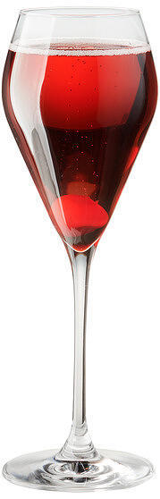

Кир рояль

«Кир» — коктейль-аперитив, изобретённый в Бургундии в первой половине XX века. Представляет собой смесь просекко
и чёрносмородинового ликёра «крем де кассис». Назван в честь героя Сопротивления, священника Феликса, послевоенного мэра Дижона,
где изготовляется смородиновый ликёр «Cassis de Dijon», который немало способствовал популяризации коктейля,
предлагая его всем приезжающим в Дижон делегациям.
Существует версия, что коктейль в его нынешнем виде был изобретён из-за того, что запасы красных бургундских вин
в крае были конфискованы немецкой армией во время войны.